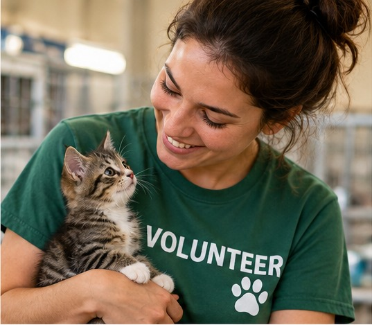

Adoption Process
Our adoption process helps people learn about available animals and find a pet that is a good match for their home.
- Learn about the animals available for adoption.
- Choose an animal that may be a good match.
- Contact the rescue with your questions.
- Complete the adoption process with the rescue team.
- Prepare your home for your new pet.
Foster Program
Foster families provide temporary homes for animals while they wait for permanent families. Fostering can give an animal a safe and comfortable place to stay.
Volunteer Opportunities
Volunteers can support the rescue in different ways. They can help with animals, community activities, and other tasks that support the organization's work.
- Help care for rescue animals.
- Support adoption activities.
- Help with community events.
- Share information about animals needing homes.
Ways to Support Us
Adopting, fostering, volunteering, and donating are all ways community members can help support animals in need.

How Would You Like to Help?
Select an option below to learn more about how you can support animals through Twin Cities Animal Rescue.